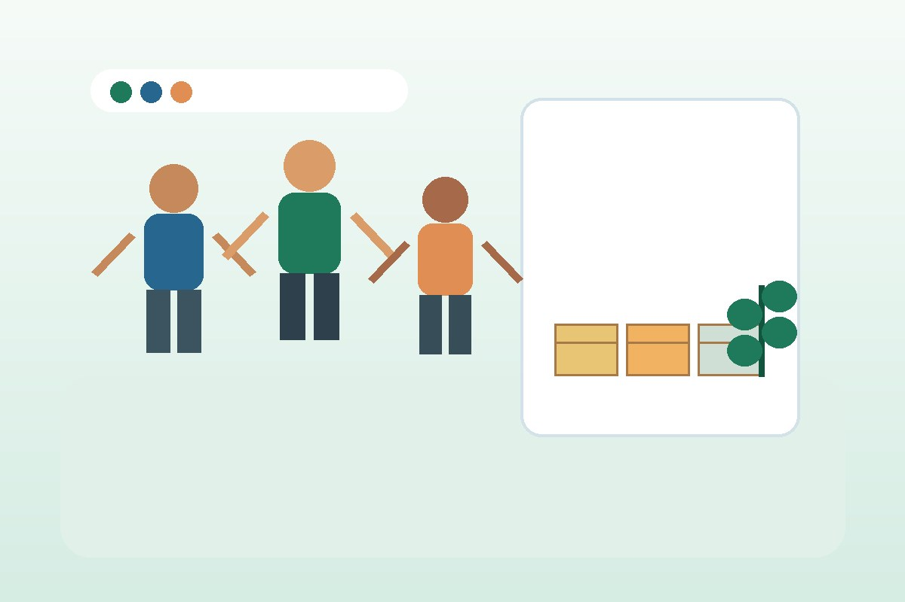

Solidariedade e transformação social
Conectando pessoas para fortalecer comunidades
A ONG Esperança Viva desenvolve ações sociais voltadas ao acolhimento, à educação comunitária e ao apoio de famílias em situação de vulnerabilidade.

Sobre a ONG
Nossa missão é promover apoio social por meio de campanhas de doação, atividades educativas e projetos de voluntariado. Cada ação é planejada para aproximar pessoas que desejam ajudar de famílias e comunidades que precisam de suporte.
Entre em contato
Fale com a equipe para saber como doar, participar ou indicar uma família atendida.
E-mail: contato@esperancaviva.org.br
Telefone: (54) 99999-9999
Endereço: Caxias do Sul - RS